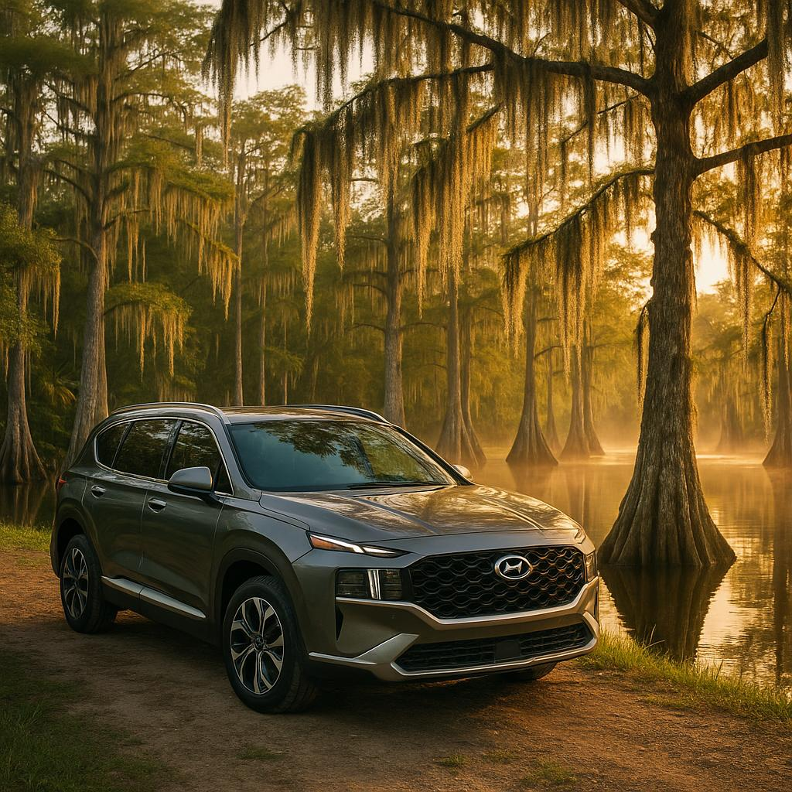

Things to Do · June 16, 2026

Southwest Florida is famous for its beaches, but inland — tucked between Naples and Immokalee — lies one of the most awe-inspiring natural wonders in the entire state. The Corkscrew Swamp Sanctuary, managed by the National Audubon Society, protects the largest remaining stand of old-growth bald cypress forest in North America. Some of these trees are over 500 years old, and walking among them feels genuinely ancient — a world away from beach traffic and souvenir shops.
Whether you're a serious birder, a casual nature lover, or a family looking for a genuinely memorable morning, Corkscrew Swamp delivers. And with a comfortable rental car, the drive out there is half the fun.
The sanctuary sits roughly 45 minutes to an hour east of Fort Myers and Cape Coral, depending on your starting point. If you're flying into RSW or PGD, we can have your rental ready the moment you land — making it easy to head straight out on an adventure without the hassle of ride-shares or shuttle schedules.
Take I-75 south to Exit 111 (Immokalee Road / CR-846) and head east. The landscape shifts dramatically as you leave the suburbs behind — cattle ranches, wetland prairies, and big open Florida sky stretch out on either side. It's a genuinely scenic drive, and the Hyundai Santa Fe's panoramic sunroof is perfect for soaking it all in. Follow the signs for Corkscrew Road heading north, and you'll arrive at the sanctuary entrance in no time.
Pro tip: Fill up on gas in Bonita Springs or Estero before turning east — fuel stations are sparse once you're out in the rural stretch.
The heart of Corkscrew Swamp is a 2.5-mile boardwalk loop that winds through four distinct ecosystems: wet prairie, pond cypress forest, pop ash slough, and the majestic old-growth bald cypress dome. The boardwalk is flat, well-maintained, and fully accessible — great for all ages and fitness levels. Plan on spending 1.5 to 3 hours depending on how often you stop to stare up at those cathedral-like trees (hint: you'll stop a lot).
Here's what you're likely to encounter:
Admission is charged per adult and is free for Audubon members and children under 6. Check the Corkscrew Swamp Audubon website for current hours and pricing before you go — the sanctuary does occasionally close for weather events or special programs.
Corkscrew Swamp is open year-round, but the experience changes dramatically with the season.
Whatever the season, pack these essentials:
Corkscrew Swamp makes a perfect half-day anchor for a fuller adventure. With a rental car, you have total flexibility to tack on more stops without worrying about schedules.
Whether you're delivering the car back to PGD, dropping it at RSW, or heading back to your rental in Cape Coral, the drive home through SWFL's golden-hour light is the perfect end to an unforgettable day in the wild.